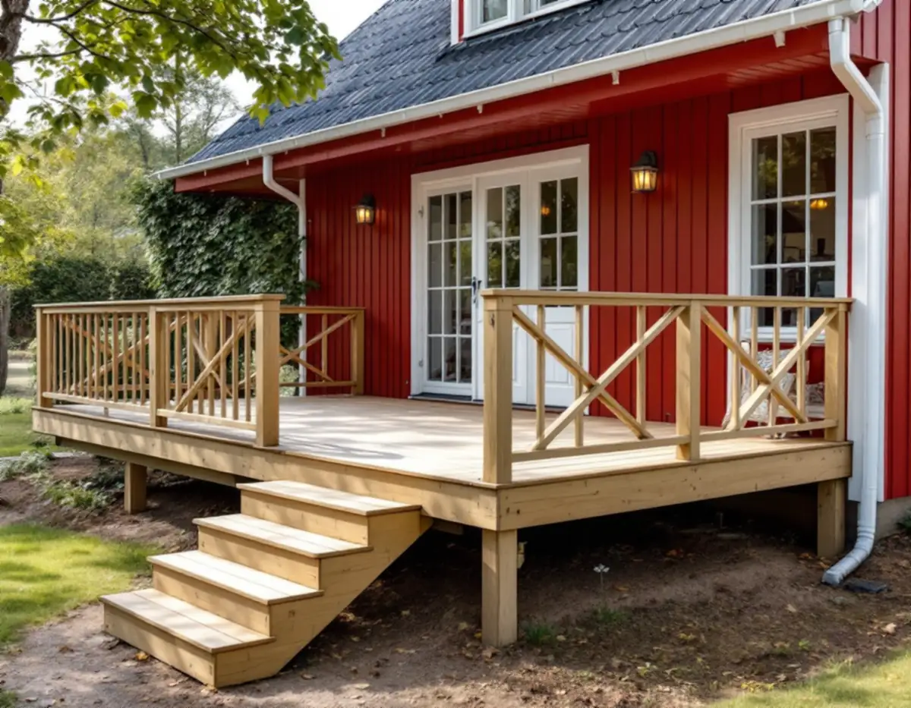
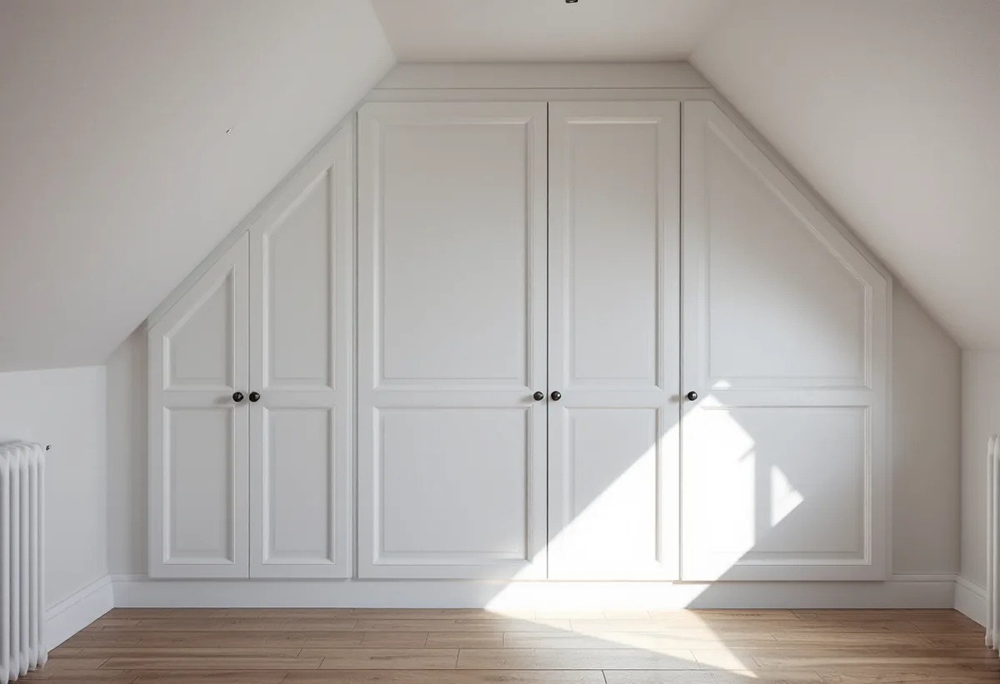

Platsbesök
Vi mäter, ser på konstruktionen och reder ut om något bär, om lov eller anmälan kan behövas.
Behöver du en snickare i Stockholm för en ny altan, en vägg som ska flyttas, nya innerdörrar eller platsbyggda garderober tar vi jobbet från ritning till sista listen. Vi utgår från huset du har och säger till när ett jobb kräver bygglov, anmälan eller styrelsens tillstånd.

Byggsnickeri är det som håller ihop huset: stommar till väggar, bjälklag, takstolar, altaner och mindre tillbyggnader. Inredningssnickeri är det du ser och tar i varje dag, som dörrar och karmar, foder och golvlister, trappor, bänkar och platsbyggda skåp. Många jobb är både och, till exempel en ny vägg som ska få dörr, foder och lister.
Vi arbetar i villor, radhus och lägenheter i hela Stockholm, från Bromma där vi har vår bas till kranskommunerna. Ett snickeriarbete hänger ofta ihop med andra moment, och vi samordnar dem som en total entreprenad med en kontaktperson. El och VVS i samma projekt utförs av installatörer med rätt behörighet för just de arbetena.

En altan byggs på plintar eller en grund, med bärlina, reglar och trall ovanpå. Det som avgör hur länge den håller är sådant som inte syns när den är klar: att virket under trallen kan torka ut, att det finns luft mellan trall och mark, att reglarna inte ligger direkt mot husets fasad och att vattnet rinner bort från huset. En gammal altan med ruttna reglar går ofta att bygga om på samma plats.
Ska altanen få tak, väggar eller glas blir det i regel en tillbyggnad av huset. Större projekt, som ett nytt rum eller ett fristående gästhus, beskriver vi på sidorna om tillbyggnad och attefallshus.
Plan- och bygglagens kapitel om lov skrevs om från 1 december 2025. För altaner gäller nu enligt Boverket att bygglov inom detaljplan krävs först om altanen blir högre än 1,8 meter över marken och placeras inom 3,6 meter från en byggnad, eller högre än 1,2 meter och placeras längre bort. Höjden mäts från marken vid altanens yttersida till altangolvets ovansida. Ett lovfritt räcke räknas inte in, men ett plank ovanpå altanen gör det. Utanför detaljplan finns inga motsvarande mått.
Ett småhus får byggas till utan bygglov med sammanlagt högst 30 kvadratmeter, om tillbyggnaden inte är högre än husets taknock och placeras minst 4,5 meter från gränsen eller har grannens skriftliga medgivande. Lovfria tillbyggnader som redan finns, till exempel en attefallstillbyggnad eller ett skärmtak, räknas in i de 30 kvadratmeterna. Friggebod och attefallshus har ersatts av lovfria komplementbyggnader och komplementbostadshus, med högst 30 kvadratmeter per byggnad och 45 kvadratmeter sammanlagt på tomten inom detaljplan.
Lovfritt betyder inte anmälningsfritt. Påverkas husets bärande delar väsentligt, till exempel när en bärande vägg tas bort, krävs anmälan och startbesked innan arbetet börjar, och Boverket rekommenderar att en konstruktör tar reda på vad som bär. Lov kan också krävas i särskilt värdefulla miljöer och nära gräns eller järnväg, så vi stämmer av med kommunens byggnadsnämnd när huset ligger i ett sådant läge.
En ny innervägg byggs med reglar av trä eller stål, isolering för ljudet och gips eller skiva, och får dörr, foder och lister så att den ser ut att ha stått där från början. Att ta bort en vägg är ett större beslut: är den bärande behövs en ny balk och en anmälan. Boverket nämner också att en vägg som var förberedd för att öppnas när huset byggdes kan tas bort utan anmälan, om de bärande delarna inte påverkas väsentligt.
Byte av innerdörrar handlar ofta om karmar som har satt sig, nya trösklar efter ett golvbyte eller dörrar som ska matcha husets epok. Trappor renoveras genom att steg och sättsteg byts eller slipas och räcken förstärks. I äldre hus kan gamla profilerade foder och taklister kompletteras med nya i samma profil, så att ett renoverat rum inte bryter mot resten av huset.
Platsbyggda garderober och bokhyllor under trappor, i snedtak och i nischer tar vara på ytor där köpta möbler inte passar. I en bostadsrätt krävs styrelsens tillstånd för ingrepp i bärande konstruktion och för andra väsentliga förändringar av lägenheten, enligt bostadsrättslagens 7 kap. 7 §. Golvet efter ett väggbyte tar vi hand om inom golvläggning.
Vi mäter, ser på konstruktionen och reder ut om något bär, om lov eller anmälan kan behövas.
Du får ett skriftligt kostnadsförslag och vid behov en enkel ritning över det som ska byggas.
Behövs bygglov, anmälan eller styrelsens tillstånd tar vi fram underlaget innan arbetet börjar.
Grund, reglar, balkar och stomme byggs först, och el och VVS dras in där det behövs.
Trall, skivor, dörrar, foder, lister och inredning monteras och passas in.
Vi går igenom jobbet tillsammans och lämnar de handlingar som hör till.
Skatteverket räknar flera snickeriarbeten som rotarbete i ett småhus: att bygga en altan som byggs ihop med huset, att reparera entrétrappor och altaner, att riva väggar och bygga om planlösningen, att byta och reparera dörrar och att montera platsbyggda garderober och bokhyllor. En tillbyggnad ger rätt till avdrag när den sitter ihop med huset, och huset ska då vara äldre än fem år. En helt ny fristående byggnad, som ett nytt gästhus eller garage, ger inget avdrag, och inte heller staket eller fristående möbler.
Avdraget är 30 procent av arbetskostnaden, högst 50 000 kronor per person och år, och rot och rut får sammanlagt bli högst 75 000 kronor. Material och resor ingår inte. Vi drar avdraget direkt på fakturan. I en bostadsrätt gäller andra gränser – att bygga en altan ger till exempel inget avdrag där.
Priset för ett snickeriuppdrag styrs av hur mycket som ska byggas från grunden och hur mycket som ska passas in mot det befintliga. En altan på plan mark med fria mått går fortare än en på sluttning med trappor. En vägg med dörr, el och lister tar längre tid än en enkel skiljevägg, och snickerier i ett äldre hus med sneda vinklar kräver mer anpassning. Material, virkeskvalitet och eventuell konstruktör eller lovhandlingar räknas till.
Vi kommer ut på ett gratis platsbesök och lämnar sedan ett skriftligt kostnadsförslag där arbete och material redovisas var för sig.
Mer yta i anslutning till huset.
Tillbyggnad →Fristående hus på tomten.
Attefallshus →Parkett, trägolv och slipning.
Golvläggning i Stockholm →Total entreprenad för villan.
Byggfirma i Stockholm →